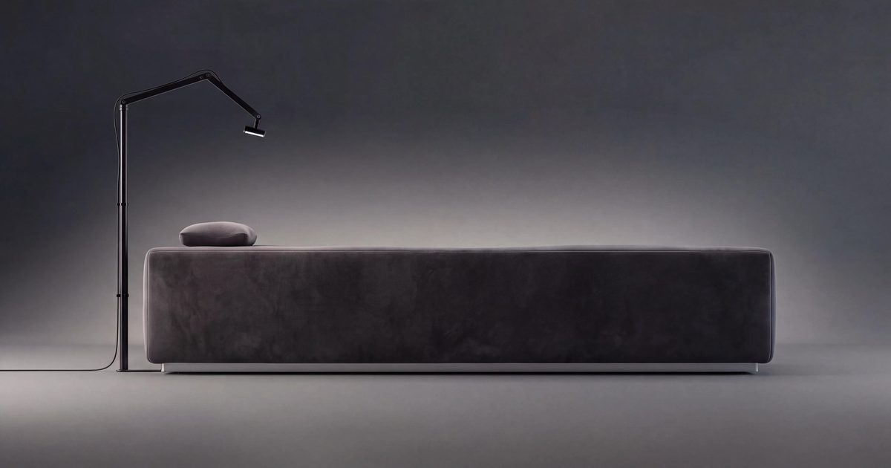

Велнес-брифинг: команды SweatHouz и P90X запускают «студию мечты» о здоровье мозга
На велнес-брифинге Глосси поговорил с Джейми Уиксом, основателем и управляющим партнером Founders Row, инвестиционной компании из Атланты, которая управляет концепциями фитнеса и хорошего самочувствия, такими как SweatHouz, LiftHer и SculptHouse.
Weeks сотрудничает с основателем P90X Джоном Конгдоном для дебюта better.states, новой концепции оздоровления, основанной на преднамеренном отдыхе и времени вдали от экранов.